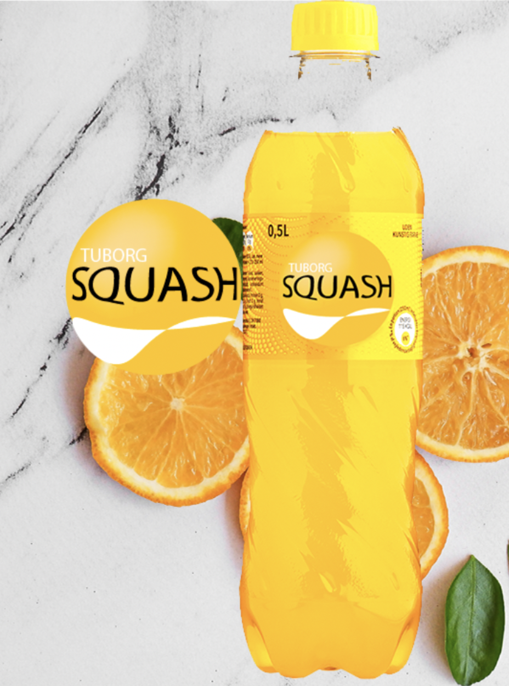

Tuborg Squash - Historie
1936 - Lancering
Tuborg Squash blev første gang lanceret tilbage i 1936, med denne forfriskende appelsinvand, som vi kender den i dag.
Den første Tuborg Squash blev tappet d. 5 august 1936 og kom godt fra start blandt danskerne.
1936-1980'erne - Folkeeje
Efter den gode modtagelse af appelsinvanden blev Tuborg Squash et den af danskernes hverdag. Det var både i dagligdagen og til fest at appelsinvanden blev drukket og serveret. Derfor blev Tuborg Squash en rent folkeeje. Men slutningen af perioden begyndte salgstallene at stagnere og Tuborg Squash lå til at skulle tappe nogle af deres sidste appelsinvand.
1987 - succesfuld relancering
Efter de dårlige salgstal, skulle måtte der tages handling for at vende den faldende salgskurve. Tuborg Squash valgte at lave en relancering i form af en humorisk og i dag en historisk reklame. Mange har set reklamen om købmanden Jacob og kunden Finn. Finn har manglende evne til at udtale Squash. Danskerne tog nærmest reklamen til sig i sin hverdag og kaldte Tuborg Squash for de sjove udtalelser som Finn gjorde i reklamen. Herfra fik Tuborg Squash sin genrejsning af sin appelsinvand.

2022 - Nyt logo
Tuborg Squash bliver ofte forbundet med en sodavand til den ældre generation. Det er alsolut en sodavand for alle og det vil Tuborg Squash gerne vise. Derfor er der blevet lavet om på det velkendte Squash logo. Det var tid til fornyelse og Tuborg Squash er nu klar til at se hvad fremtiden bringer.